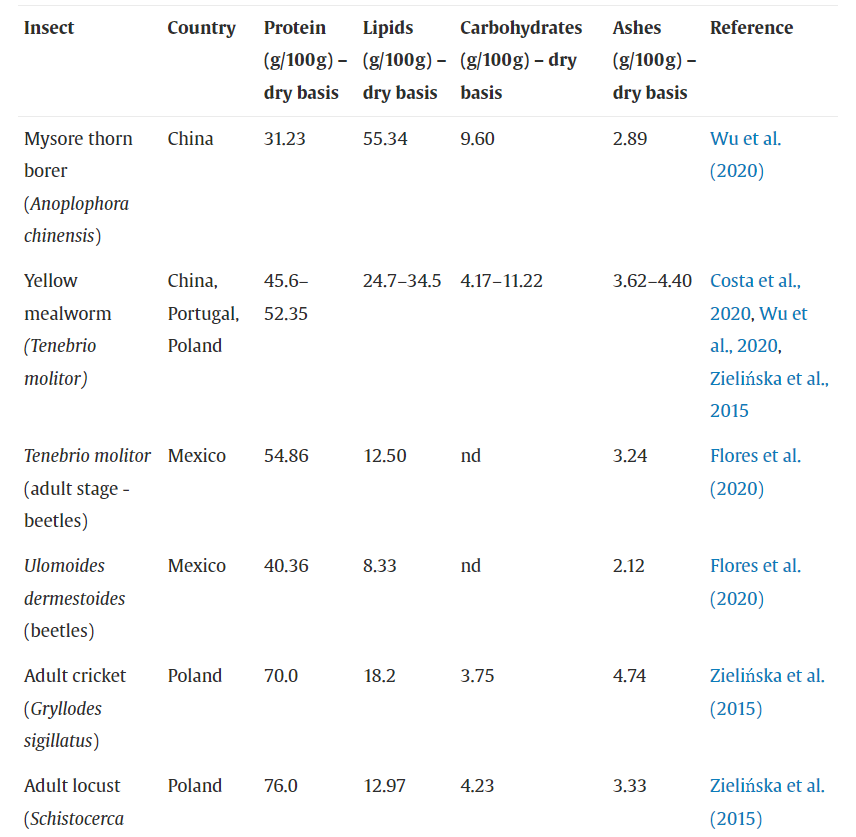
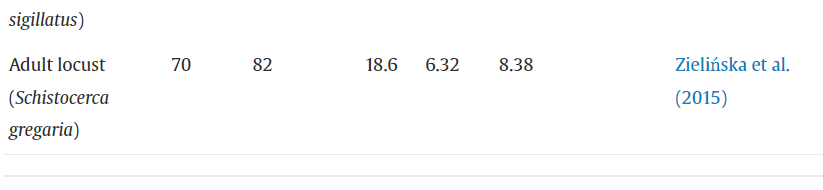
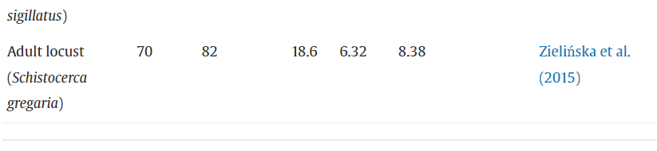

Edible insects: Entomophagy
The United Nations (UN) projects that the world population will reach 9.7 billion people by 2050 (United Nations, 2019); consequently, there will be a proportional increase in the demand for proteins of good nutritional quality, being the edible insects one of the alternatives to conventional products of animal origin. Furthermore, consumption of edible insects has advantages related to sustainability, such as the conversion rate of feed to protein, which is about 1.7 kg of feed per kg of insect, compared with 10 kg of feed per kg of cattle. Another advantage is the significantly low water consumption, being 1 L/kg of protein for insects in comparison with 1,500 L/kg of protein for cattle; generation of fewer greenhouse gases and ammonia; and need of considerably smaller spaces (such as vertical farms) than other systems of protein production, including cattle, poultry, and pigs (Baiano, 2020, van Huis et al., 2013). Entomophagy has become a trend in food research, creating the impression that edible insects are a new food fashion, yet they are not. Insect consumption by humans goes back thousands of years and is still part of the traditional diet of at least 2 billion people, who belong to about 3,000 ethnic groups in more than 100 countries, mainly in Africa, Asia, and Latin America (van Huis et al., 2013).
Dried edible insects: a) house cricket, Acheta domesticus; b) Jamaican field cricket, Gryllus assimilis; c) banded cricket, Gryllodes sigillatus; d) grasshopper, (species not specified) e) buffalo worm, Alphitobius diaperinus; f) yellow mealworm, Tenebrio molitor.
Insects can be obtained both by collection in nature and farming. However, most edible insects are harvested from the wild. That is an alarming scenario because the unsustainable collection of insects in nature can lead to serious ecological damage, such as habitat destruction or insect population collapse (Yen, 2009). Thus, insect agriculture or “mini-livestock” cultivation can sustain the increasing demand for edible insects and ensure food safety (Stull & Patz, 2020). Furthermore, since mini-livestock cultivation allows controlling the environment in which the insects are reared, it is possible to diminish the sources of contamination instead of harvesting edible insects (Murefu, Macheka, Musundire, & Manditsera, 2019). The number of insect species currently being reared for human consumption is limited. Most of those insects belong to the Orthoptera, Coleoptera, and Diptera orders and are mostly consumed in the larval (Coleoptera and Diptera) or adult (Orthoptera) stages. Also, these species have a history of already being reared as pet food or as bait for fishing (van Huis, 2020). From the Orthoptera order, the most common reared insects are crickets, such as Acheta domesticus (house cricket), Gryllodus sigillatus (banded cricket), Gryllus assimilis, Gryllus testaceus and Gryllus bimaculatus (field crickets), and grasshoppers, like Locusta migratora (migratory locust). While from the Coleoptera, Tenebrio molitor (mealworm) and Alphitobius diaperinus (lesser mealworm) are the most often reared species. Finally, Hermetia illucens (black soldier fly) and Musca domestica (housefly) are more frequently reared in the Diptera order (Raheem et al., 2019). Safety, flavor, appearance, size, availability, and nutritional profile are some of the requirements for an insect to be considered edible (Ghosh, Jung, & Meyer-Rochow, 2018). In order to define the best species for human consumption, Gere, Radványi, and Héberger (2019) conducted a study comparing the nutritional profiles of edible insects. Nevertheless, the authors concluded there are no “best” or “healthiest” insect species because they depend on the nutrients desired. For example, the adult Tenebrio molitor should be chosen based on the proximate composition, while Galleria mellonella larvae had the highest mineral content. Also, the nutritional profiles are highly diverse and are mainly influenced by the species and their developmental stage. However, to consider just the nutritional profile is not sufficient when choosing the best edible insect species for human consumption; it is also necessary to examine the rearing characteristics, flavor, and the potential for processing. Edible insects are known to have a high concentration of high-quality nutrients, especially proteins containing all the essential amino acids (Table 7, Table 8). In addition, they are rich in polyunsaturated fatty acids (Table 9) and fibers, mostly chitin. The consumption of 25 g/day of whole crickets in the form of flour for breakfast showed a positive impact on humans’ microbiota and on the TNF-α in blood plasma, indicating a reduction in systemic inflammation (Stull et al., 2018).
Proximate composition of some edible insects.
Amino acid composition of some edible insects.

Major fatty acids of some edible insects.
Protein represents the main component of the nutrient composition of insects; however, most of the reported values are possibly overestimated. The protein content is often determined based on the total nitrogen content, and most authors use a nitrogen-to-protein conversion factor of 6.25. Insects contain a varying amount of non-protein nitrogen, then the most appropriate factors should be determined for each species, for instance, 4.76–5.41 for mealworms, 5.25 for crickets, and 5.33 for locusts (Boulos et al., 2020, Costa et al., 2020); therefore, protein values must not be compared nor overestimated. The micronutrients of edible insects, such as minerals (Table 10) and vitamins, vary enormously and are extremely influenced by the insect diet (Baiano, 2020). For example, insects can be sources of riboflavin, pantothenic acid, and biotin but are usually deficient in vitamins A, C, and E (Rumpold & Schlüter, 2013).
Minerals from some edible insects
 

It is important to highlight that their composition is affected according to species, maturity stage, feed, pre-processing and processing conditions, and their flavor is influenced by their habitat, in the case of wild insects. A recent systematic review presents a compilation of the nutritional data from 54 edible insects consumed in Africa, providing insightful information on proximate composition, vitamins A, C and B2, Fe, Ca, Zn, P, and Mg contents (Hlongwane, Slotow, & Munyai, 2020). Numerous methods have been applied for the traditional preparation and preservation of edible insects. Post-harvest procedures, such as removal of the head, legs, wings, and other appendices, are usually employed during the preparation; while steaming, boiling, baking, deep-frying, sun-drying, smoking, and transforming them into a paste are the most traditional methods for preparation and preservation (Rumpold et al., 2014). In the western market, insect-based food products are a new phenomenon. Over the last decade, numerous companies and startups, mainly in Europe, South Asia, and North America, have been founded to market edible insect products. The main edible insect products are flavored snacks, energy bars, and powders, while crickets, grasshoppers, and mealworms are the most commercialized insects (Melgar-Lalanne, Hernández-Álvarez, & Salinas-Castro, 2019). Currently, the huge variety of edible insect products commercialized worldwide can be seen in “The big list of edible insect products!” (https://www.bugburger.se/guide/the-big-list-of-edible-insect-products/), organized by Anders Engström and last updated in July 2020. Besides the nutritional, environmental, and economic benefits associated with edible insects, they may host endogenous and exogenous risk factors to human health, just like any other type of food. The main route of contamination of food safety hazards in edible insects is the rearing environment, especially the feed substrate (van der Fels-Klerx, Camenzuli, Belluco, Meijer, & Ricci, 2018). Therefore, to improve food safety regarding edible insects, the production setting and the feed need to be assessed and controlled, which is only possible if these insects are under cultivation. There are three main categories of potential food safety hazards related to edible insect consumption: (i) biological, such as harmful microorganisms, viruses, and parasites; (ii) chemical, such as mycotoxins, heavy metals, and pesticides; and (iii) allergens. Insects might act as vectors of microorganisms by mechanical contact with contaminated surfaces or due to microbial growth inside them, even without any sign of disease (Wasala, Talley, Desilva, Fletcher, & Wayadande, 2013). Generally, insect-specific pathogenic microorganisms are particular for invertebrates, thus being harmless to humans. Since there is a large taxonomical distance between insects and humans, these microorganisms can colonize most probably only in invertebrates’ tissues (Eilenberg, Vlak, Nielsen-Leroux, Cappellozza, & Jensen, 2015). Regarding human pathogenic bacteria, Salmonella sp. and Listeria monocytogenes seem to be major concerns of contamination during the rearing of edible insects due to their pathogenicity and ability to colonize the gastrointestinal tract of insects (Wynants et al., 2019). Thus, these bacteria present an immediate health risk to consumers, particularly in communities with the habit of consuming raw insects. There is scarce literature evaluating the dynamics of viruses in edible insects. Thereby, two significant concerns emerge: (a) if the arboviruses, such as Dengue, West Nile Disease, Rift Valley Fever, Hemorrhagic Fever, and Chikungunya, can replicate in edible insects and be transmitted to humans through ingestion; and (b) if the foodborne viruses, such as rotavirus, norovirus, hepatitis A, and hepatitis E, can be introduced during insect rearing and be transferred to humans. Concerning the potential of edible insects to transmit the SARS-CoV-2 virus, responsible for the Covid-19 pandemic, Dicke et al. (2020) evaluated the mechanisms of virus fixation in insect cells. Thus, they recognized that the receptors of the angiotensin-converting enzymes ACE2 of insects are different from the receptors of vertebrates, making it impossible for the SARS-CoV-2 virus to replicate inside the insect cells. Moreover, Balaraman et al. (2021) tested SARS-CoV-2 replication in several insect species and confirmed that those insects and their cells could not support the virus replication. Still, hygiene practices should be observed, as insects such as flies and cockroaches can carry and transfer viral particles through contact with contaminated surfaces. As pointed out by Gałęcki et al. (2019), insects are an underestimated reservoir of human parasites. They evaluated 300 live edible insects (mealworms, house crickets, Madagascar cockroach, and migrant locust) and found 30% with parasites potentially pathogenic for humans. In Southeast Asia, where insect-eating is common, human autopsies and insect analyses revealed that trematodes from the family of Lecithodendridae and Plagiorchidae could be transmitted orally (Chai, Shin, Lee, & Rim, 2009). Some cockroach species can harbor pathogenic protozoa such as Entamoeba histolytica, Giardia lamblia, Toxoplasma spp., and Sarcocystis spp. (Belluco, Mantovani, & Ricci, 2018). It is mandatory to use subsequent treatments, such as boiling or frying, to eliminate pathogenic microorganisms, viruses, and/or parasites to reduce the biological hazards after killing the insects. Also, those risks could be mitigated through strict hygienic rearing, handling, and processing. Edible insect food products may also contain chemical residues and contaminants, such as mycotoxins, heavy metals, and pesticides. However, there are not many studies on these substances in reared insects and excretion or accumulation of chemical contaminants from the feed substrates. Mycotoxins in edible insects may originate from substrate contamination by Aspergillus, Penicillium, or Fusarium, or when handled or stored at sub-optimal conditions (Camenzuli et al., 2018, Musundire et al., 2016). Heavy metals from the environment or feeding substrate have been found in the tissues and organs of insects, where they can be bioaccumulated. For example, larvae of T. molitor and H. illucens can accumulate cadmium and lead when reared on contaminated substrates (Vijver et al., 2003, Purschke et al., 2017) but H. illucens do not accumulate chromium, arsenic, nickel, and mercury (Purschke, Scheibelberger, Axmann, Adler, & Jäger, 2017). Truzzi et al. (2019) investigated the presence of cadmium, lead, nickel, arsenic, selenium, and mercury in T. molitor larvae fed with substrates made from residues of olive processing and found only mercury bioaccumulation and that selenium protected from mercury toxicity. A report shows an outbreak of lead poisoning in California caused by excessively high lead levels in dried chapuline grasshopper (Sphenarium), which acquired lead from silver mines in Mexico (Handley et al., 2007). Pesticides applied in agriculture are potentially dangerous for insect consumers, especially if the insects came from wild harvesting instead of controlled farming. Locusts collected in Kuwait contained high organophosphorus pesticides, probably due to the unrestrained pesticides used in that area (Saeed, Dagga, & Saraf, 1993). In addition, pesticide residues may be present in the feed substrate of insects. Chlorpyrifos was found in Musca domestica larvae fed on milk powder and sugar, while piperonyl butoxide was detected in Calliphora vomitoria (Charlton et al., 2015). A wide range of foods causes allergic reactions, especially those containing protein. Since insects are rich in proteins, edible insects and their products may be potentially allergenic and cause a reaction by contact, inhalation, and oral ingestion (Imathiu, 2020). Food allergy to insects has been reported for silkworm, mealworm, caterpillars, Bruchus lentis, sago worm, locust, grasshopper, cicada, bee, Clanis bilineata, and the food additive carmine, which is derived from female insects of Dactylopius coccus (de Gier & Verhoeckx, 2018). Allergic reactions have also been registered for mopane caterpillars (Imbrasia belina) in Africa (Kung, Fenemore, & Potter, 2011) and silkworms in China (Ji, Zhan, Chen, & Liu, 2008). According to a report of allergies provoked by food consumption in China (Ji et al., 2009), between 1980 and 2007, insects were the fourth most frequent cause of anaphylactic shock, for which locusts, grasshoppers, and silkworm pupae were the mainly responsible. Some types of proteins present in edible insects are considered an allergen, such as arginine kinase, α-amylase, and tropomyosin, and they can induce IgE-mediated allergic reactions in sensitive humans (Mitsuhashi, 2008). House dust mite can cause allergic patients to have cross-reactions to desert locust and house cricket, while the same happens with crustacean allergic patients, associated with desert locust, house cricket and stable flies, and flies allergic ones, with house cricket, desert locust, and migratory locust (Pali-Schöll et al., 2019). Thus, a warning must be given for dust mite, crustacean, or flies allergic patients before they consume edible insects. The edible insect sector is emerging. The numbers of companies, startups, investors, and insect-based products in the market are growing fast, and to maintain this growth sustainable it is necessary to deal with the current major challenges: western acceptance; the price of edible insects; and food safety and legislation. Moreover, two important concerns need further investigation to establish edible insects as an ethical food sector: the sustainability of processed insect foods, and the insects’ welfare. The use of processed insects as an ingredient in foods is a well-known strategy to reduce disgust associations with edible insects. However, to obtain insect powders or their specific components, several processing steps consume substantial amounts of energy, such as blanching, freeze-drying, oven-drying, and grinding. For that reason, eating the whole insect is a better option from a sustainable point of view, but this option is highly rejected. Thus, the sustainability aspect of processed insect foods should be evaluated in-depth to determine the real environmental gain of such products. A relevant concern related to the rearing and slaughter of insects is their welfare. Unfortunately, there is no scientific consensus on whether insects can feel pain or even are sentient beings (van Huis, 2019), which makes it impossible to evaluate the effects of the rearing and slaughter practices. Therefore, the cautionary principle should be adopted, giving invertebrates the benefit of the doubt. Thus, all practices related to the health, breeding, and slaughter of insects must be established to minimize their possible suffering. Overall, the literature lacks studies on the real potential of food safety hazards. Therefore, more studies evaluating the dynamics of pathogens and toxins on edible insects are essential. These studies should be carried out on a case-by-case basis using promising insect species for use as food and reared in an appropriate environment (van der Fels-Klerx et al., 2018). Even though insects are recognized as food in most parts of the world, only the European Union has a food safety regulation on edible insects. Thus, it is paramount to establish a worldwide legal framework to ensure the safety of insect food products (Murefu et al., 2019). Consequently, the consumption of insects will increase by boosting the confidence of consumers and investors in edible insects.